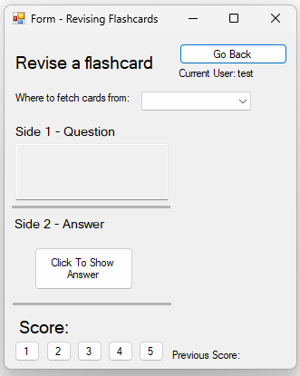
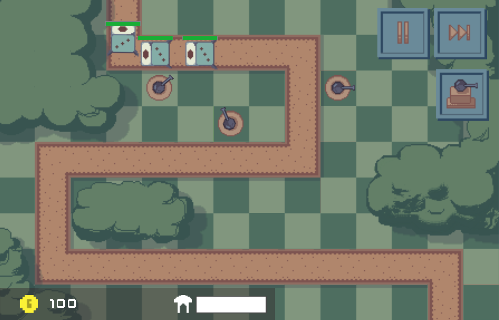

Jack Percival
C# Programmer
C# Programmer
Hi, I'm Jack. I currently study Computer Science at college (based in the UK). |
I have experience programming in C# to create database orientated programs and also have knowledge in creating console applications. I also have an understanding of HTML and CSS, which allows me to create websites such as this. I also aim to learn Microsoft PowerBI through the PowerBI Data Analyst (PL - 300) Exam offered by Pearson. This will help me develop the skills I need to visualise a given data set in an easy-to-understand and aesthetically-pleasing for businesses / companies. Courses I have completed:
|
 A screenshot of the revising card window within the project |
Synopsis of Project:This was a project undertaken during my time time at college, where it was my college coursework. It is a revision aid, allowing the user to create flashcards and add them to decks, which they can then revise from. Features of project
|
 A screenshot taken partway through a game. |
Synopsis of Project:This was a project undertaken during my time at college, it was completed during an extra curricular called 'Introduction to Game Design' Features of project
|
 A screenshot taken partway through the game. |
Synopsis of Project:This was a simple C# project mainly using string interpolation and concatenation. It was created for a homework assignment for computer science. Features of project
|